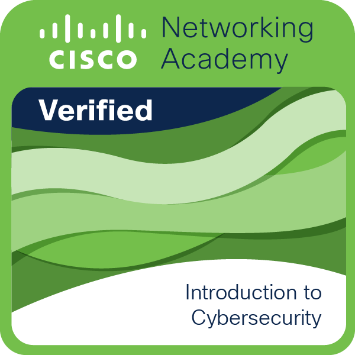

Intelligent IT person with leadership experience in areas such as infrastructure development and management, application support and security optimization. Focused on satisfying customer needs through robust, innovative and forward thinking solutions. Demonstrated success as operational leader, articulate communicator and practiced influencer. Collaborates across functions to outline and achieve project targets. Having experience in Management Information System and a strong understanding of a variety cybercrimes and attacks and incident response handling now seeking an opportunity to grow and overcome challenges as they arise whilst maintaining a positive work attitude
January 2021 - September 2023
January 2021 - September 2023
Click on the badge to view
© Isaac Adom. All rights reserved